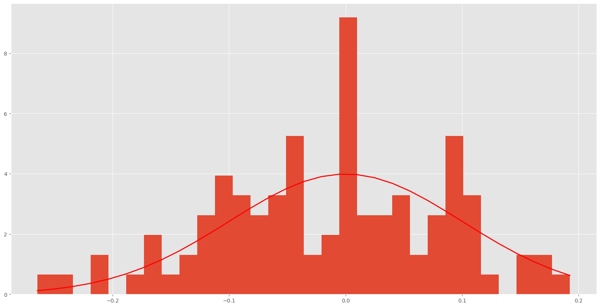

import numpy as np
import matplotlib.pyplot as plt
import scipy.special as sps
from scipy import stats
n=100
x=np.linspace(0,10,n)
Regeresión lineal 2
Vamos a calcular la regresión lienal simple de los siguientes datos y vamos a estudiar la conexión estadística de este algoritmo.
# gamma distribution
shape, scale = 2., 2. # mean=4, std=2*sqrt(2)
gamma = np.random.default_rng().gamma(shape, scale,n)
count, bins, ignored = plt.hist(gamma, 50, density=True)
y = bins**(shape-1)*(np.exp(-bins/scale) /
(sps.gamma(shape)*scale**shape))
plt.plot(bins, y, linewidth=2, color='r')
plt.show()# uniforme distribution
uniforme = np.random.default_rng().uniform(-1,1,n)
count, bins, ignored = plt.hist(uniforme, 15, density=True)
plt.plot(bins, 0.5*np.ones_like(bins), linewidth=2, color='r')
plt.show()
#normal distribution
mu, sigma = 0, 0.1 # mean and standard deviation
normal = np.random.default_rng().normal(mu, sigma, n)
count, bins, ignored = plt.hist(normal, 30, density=True)
plt.plot(bins, 1/(sigma * np.sqrt(2 * np.pi)) *
np.exp( - (bins - mu)**2 / (2 * sigma**2) ),
linewidth=2, color='r')
plt.show()
def regresion(x,y):
n=len(x)
#defineimos la matriz de coeficientes
A=np.zeros((n,2))
A[:,0]=x
A[:,1]=1
#definimos el vector de resultados
b=y
#Panteamos la ecuación normal
A_t=np.transpose(A)
A_t_A=np.dot(A_t,A)
A_t_b=np.dot(A_t,b)
#resolvemos el sistema de ecuaciones
# hacemos la factorizacion de Cholesky
L=np.linalg.cholesky(A_t_A)
#resolvemos el sistema triangular inferior
z=np.linalg.solve(L,A_t_b)
#resolvemos el sistema triangular superior
a=np.linalg.solve(np.transpose(L),z)
#calculamos el error
er=np.dot(A,a)-b
e=np.linalg.norm(er)
print(a)
print('el error de aproximación es',e)
return a,er
def grafica(x,y,a):
# grafica la recta y los puntos
plt.plot(x,y,'o')
plt.plot(x,a[0]*x+a[1])
plt.plot(x,2.0*x+3.0,'r')
plt.show()
def grafica2(x,y,a):
# grafica la recta y los puntos
plt.plot(x,y,'o')
plt.plot(x,a[0]*x+a[1])
plt.show()
def graf_error(e):
#grafica el error
plt.hist(e,20)
plt.show()
yn=2.0*x+3.0+normal
an,en=regresion(x,yn)
grafica(x,yn,an)
graf_error(en)[1.99836929 2.99380631]
el error de aproximación es 0.9580322491833362yg=2.0*x+3.0+gamma
ag,eg=regresion(x,yg)
grafica(x,yg,ag)
graf_error(eg)[1.98657722 6.6065886 ]
el error de aproximación es 23.745895756254324yu=2.0*x+3.0+uniforme
au,eu=regresion(x,yu)
grafica(x,yu,au)
graf_error(eu)[2.00446478 2.96599855]
el error de aproximación es 6.0649662650873815Note que aquí estamos suponiendo que los errores se distribuyen normalmente, es decir, que la distribución de los errores es Gaussiana. Por eso cuando se usa la regresión lineal se asume las siguientes condiciones: * Los errores son independientes. * Los errores tienen la misma varianza. * Los errores son normales. * Los errores tienen media cero. * Los errores son homocedásticos.
Además de esto, se puede hacer una conexión con la teoría de probabilidad y se puede calcular la máxima de la verosimilitud de los datos.
Ejemplo con datos reales.
Vamos a usar los datos de pingüinos, los cuales se encuentran pre-cargados en la librería searbosn y que nos permiten analizar la relación entre la longitud del pico y la masa corporal de los pingüinos. En la librearía seaborn podemos encontrar información de tres tipos de especies y en donde podemos analizar las siguientes variables: * bill_length_mm: longitud del pico en milímetros * bill_depth_mm: profunidad del pico en milímetros * flipper_length_mm: longitud de las alas en milímetros * body_mass_g: masa corporal en gramos * species: especie de pingüino
import numpy as np
from scipy.stats import norm
import pandas as pd
import seaborn as sns
import matplotlib.pyplot as plt
%matplotlib inline
plt.rcParams['figure.figsize'] = (20, 10)
plt.style.use('ggplot')
import warnings
warnings.filterwarnings('ignore')df = sns.load_dataset("penguins")
type(df) # note que df es un objeto de tipo DataFrame de pandas
# para visualizar el encabezado del DataFrame
df.head()| species | island | bill_length_mm | bill_depth_mm | flipper_length_mm | body_mass_g | sex | |
|---|---|---|---|---|---|---|---|
| 0 | Adelie | Torgersen | 39.1 | 18.7 | 181.0 | 3750.0 | Male |
| 1 | Adelie | Torgersen | 39.5 | 17.4 | 186.0 | 3800.0 | Female |
| 2 | Adelie | Torgersen | 40.3 | 18.0 | 195.0 | 3250.0 | Female |
| 3 | Adelie | Torgersen | NaN | NaN | NaN | NaN | NaN |
| 4 | Adelie | Torgersen | 36.7 | 19.3 | 193.0 | 3450.0 | Female |
# para visualizar el tamaño del DataFrame
print('Total de elementos ',df.size)
# para visualizar el número de filas y columnas del DataFrame
print('Número de filas y columnas',df.shape)Total de elementos 2408
Número de filas y columnas (344, 7)# para visualizar los datos estadísticos básicos del DataFrame
df.describe()| bill_length_mm | bill_depth_mm | flipper_length_mm | body_mass_g | |
|---|---|---|---|---|
| count | 342.000000 | 342.000000 | 342.000000 | 342.000000 |
| mean | 43.921930 | 17.151170 | 200.915205 | 4201.754386 |
| std | 5.459584 | 1.974793 | 14.061714 | 801.954536 |
| min | 32.100000 | 13.100000 | 172.000000 | 2700.000000 |
| 25% | 39.225000 | 15.600000 | 190.000000 | 3550.000000 |
| 50% | 44.450000 | 17.300000 | 197.000000 | 4050.000000 |
| 75% | 48.500000 | 18.700000 | 213.000000 | 4750.000000 |
| max | 59.600000 | 21.500000 | 231.000000 | 6300.000000 |
# aqui primero debemos mirar si hay datos faltantes
print(df.isnull()) # esto nos devuelve un DataFrame de booleanos
# aqui imprime si el dato es faltante o no
print(df.isnull().sum()) # esto nos devuelve la suma de los valores faltantes por columna species island bill_length_mm bill_depth_mm flipper_length_mm \
0 False False False False False
1 False False False False False
2 False False False False False
3 False False True True True
4 False False False False False
.. ... ... ... ... ...
339 False False True True True
340 False False False False False
341 False False False False False
342 False False False False False
343 False False False False False
body_mass_g sex
0 False False
1 False False
2 False False
3 True True
4 False False
.. ... ...
339 True True
340 False False
341 False False
342 False False
343 False False
[344 rows x 7 columns]
species 0
island 0
bill_length_mm 2
bill_depth_mm 2
flipper_length_mm 2
body_mass_g 2
sex 11
dtype: int64# para manipular la base de datos debemos hacer una copia
df1 = df.copy()#vamos a buscar los datos faltantes en la columna "body_mass_g"
print(df1['body_mass_g'].isnull().sum()) # esto nos devuelve la suma de los valores faltantes por columna2#vamos a ver la fila de los datos faltantes en la columna "body_mass_g"
print(df1[df1['body_mass_g'].isnull()]) species island bill_length_mm bill_depth_mm flipper_length_mm \
3 Adelie Torgersen NaN NaN NaN
339 Gentoo Biscoe NaN NaN NaN
body_mass_g sex
3 NaN NaN
339 NaN NaN Necesitamos buscar alguna estrategia para estudiar los datos, por ejemplo, podemos rellenarlos con el promedio, o podemos omitir esos datos, o podemos usar la regresión lineal para estimar los valores faltantes (Note que para buscar una estrategia siempre es dependiente al problema). Para este caso vamos a omitir los datos faltantes.
# eliminar la fila con los datos faltantes
df1.dropna(subset=['body_mass_g'], inplace=True)
print(df1.isnull().sum()) # esto nos devuelve la suma de los valores faltantes por columna
print(df1.shape) # para visualizar el número de filas y columnas del DataFramespecies 0
island 0
bill_length_mm 0
bill_depth_mm 0
flipper_length_mm 0
body_mass_g 0
sex 9
dtype: int64
(342, 7)Vamos a estudiar la relación entre la longitud del pico y la masa corporal de los pingüinos. Para ello vamos a ver si existe una relación lineal entre estas dos variables. Una forma básica de estudiar dicha relación es hacer un primer gráfico de dispersión de los datos.
by=df1["body_mass_g"] # extraemos la columna body_mass_g
bl=df1["bill_length_mm"] # extraemos la columna bill_length_mm
plt.scatter(by, bl)
plt.xlabel("body mass grams")
plt.ylabel("bill length mm")
plt.title("Relationship between body mass and bill length")
plt.show()
au,eu=regresion(by,bl)
print(eu)
grafica2(by,bl,au)[4.05141658e-03 2.68988724e+01]
el error de aproximación es 81.02156608744191
0 2.991685
1 2.794255
2 -0.234024
4 4.176260
5 2.386543
...
338 -0.347901
340 -0.251757
341 -0.205482
342 2.766239
343 -1.123478
Name: bill_length_mm, Length: 342, dtype: float64Aquí nos hacemos la pregunta, ¿los errores se distribuyen normalmente? Para responder esta pregunta podemos hacer un histograma de los errores.
graf_error(eu)Para verificar esto podemos hacer una prueba de hipótesis, para verificar si los errores de distribuyen normalmente, para esto usaremos la prueba de Shapiro-Wilk, la cual nos permite verificar si los datos se distribuyen normalmente o no, para esto usaremos la función shapiro de la librería scipy.stats, esta función nos devuelve un valor de p, el cual nos indica si los datos se distribuyen normalmente o no, si el valor de p es menor a 0.05, entonces los datos no se distribuyen normalmente, si el valor de p es mayor a 0.05, entonces no hay evidencia para rechazar la hipótesis.
stats.shapiro(eu)ShapiroResult(statistic=0.9543935060501099, pvalue=8.215727653748672e-09)REGRESIÓN MULTIPLE
Podemos generalizar la regresión lineal simple para el caso de regresión líneal multiple, para esto debemos escoger variables independientes que sean linealmente independientes. En este caso, la regresión lineal multiple se puede escribir como:
\[y = \beta_0 + \beta_1 x_1 + \beta_2 x_2 + \cdots + \beta_p x_p + \epsilon\]
y se puede escribir de la siguiente forma matricial: \[y = A\beta + \epsilon\]
de esta forma tenemos que la aproximación de los parámetros \(\beta\) se puede escribir como: \[\hat{\beta} = (A^TA)^{-1}A^Ty\]
Vamos a ve si existe una relación lineal entre la profundidad del pico se puede explicar desde la longitud del pico y la longitud de las alas. Para ello vamos a usar la regresión lineal multiple. Primero tenemos que mostrar que las tres variables son linealmente independientes estilísticamente, para ello vamos usar la covarianza y la correlación, (la correlación mide el ángulo entre las dos rectas que se obtienen al hacer la regresión lineal simple de los datos, cuando es 1 0 -1 los datos son colineales, es decir son dependientes). Para ello vamos a usar la función corr de la librería pandas.
Antes de comenzar debemos revisar si los datos tienen valores faltantes
print(df1.isnull().sum()) # esto nos devuelve la suma de los valores faltantes por columnaspecies 0
island 0
bill_length_mm 0
bill_depth_mm 0
flipper_length_mm 0
body_mass_g 0
sex 9
dtype: int64# Matriz de correlación para calcular la matriz de correlación en pandas usamos el método corr()
df1.corr()| bill_length_mm | bill_depth_mm | flipper_length_mm | body_mass_g | |
|---|---|---|---|---|
| bill_length_mm | 1.000000 | -0.235053 | 0.656181 | 0.595110 |
| bill_depth_mm | -0.235053 | 1.000000 | -0.583851 | -0.471916 |
| flipper_length_mm | 0.656181 | -0.583851 | 1.000000 | 0.871202 |
| body_mass_g | 0.595110 | -0.471916 | 0.871202 | 1.000000 |
Note que la correlación entre la masa del cuerpo y la longitud de las alas es 0.87 lo cual estadísticamente se “podría decir” que son colineales. Para estudiar este tipo de problemas se debe un análisis estadístico más profundo.
import numpy as np
import matplotlib.pyplot as plt
#from mpl_toolkits import mplot3d
x = df1["bill_length_mm"]
y = df1["flipper_length_mm"]
z = df1["bill_depth_mm"]
data = np.c_[x,y,z]
# Creating figures for the plot
fig = plt.figure(figsize = (10, 7))
ax = plt.axes(projection ="3d")
# Creating a plot using the random datasets
ax.scatter3D(x, y, z, color = "red")
plt.title("Gráfica de los puntos")
# display the plot
plt.show() def regresion(x,y,z):
n=len(x)
#defineimos la matriz de coeficientes
A=np.zeros((n,3))
A[:,0]=x
A[:,1]=y
A[:,2]=1
#definimos el vector de resultados
b=z
#Panteamos la ecuación normal
A_t=np.transpose(A)
A_t_A=np.dot(A_t,A)
A_t_b=np.dot(A_t,b)
#resolvemos el sistema de ecuaciones
# hacemos la factorizacion de Cholesky
L=np.linalg.cholesky(A_t_A)
#resolvemos el sistema triangular inferior
z=np.linalg.solve(L,A_t_b)
#resolvemos el sistema triangular superior
a=np.linalg.solve(np.transpose(L),z)
#calculamos el error
er=np.dot(A,a)-b
e=np.linalg.norm(er)
print(a)
print('el error de aproximación es',e)
return a,er
#grafica el error
plt.hist(e,20)
plt.show()a,er=regresion(x,y,z)
graf_error(er)[ 0.09405042 -0.10595571 34.30840672]
el error de aproximación es 28.728417944174634#from mpl_toolkits import mplot3d
x = df1["bill_length_mm"]
y = df1["flipper_length_mm"]
z = df1["bill_depth_mm"]
data = np.c_[x,y,z]
mn = np.min(data, axis=0)
mx = np.max(data, axis=0)
X,Y = np.meshgrid(np.linspace(mn[0], mx[0], 20), np.linspace(mn[1], mx[1], 20))
Z = a[0]*X + a[1]*Y + a[2]
# Creating figures for the plot
fig = plt.figure(figsize = (10, 7))
ax = plt.axes(projection ="3d")
# Creating a plot using the random datasets
ax.scatter3D(y, x, z, color = "red")
ax.plot_surface(Y, X, Z, rstride=1, cstride=1, alpha=0.3)
plt.title("Gráfica de los puntos")
# display the plot
plt.show()